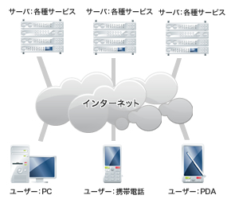

業務システムの設計と開発・保守
創業より続く事業で、金融系（銀行、保険、証券）のお客様をはじめ、多種多様な業種のお客様からの開発依頼から出発し仕事が始まります。業務システムは、各企業様の基幹システムはもちろん、企業内人事/給与システムや、Internetを介したBtoB、BtoCのシステム等様々です。業務システムは、開発して終わりではなく、使用されて、はじめてお客様のお役に立てるもの。業務システムを安定して使用して頂くためのメンテナンス（保守）作業も私たちの重要な仕事です。
創業当時は、メインフレームと言われるハードウェアにプログラムをいれて、業務アプリケーションを開発していました。
約10年前より、徐々にお客様の人事給与システムはオープンシステムへと切り替り、現在の開発作業は「．NET」、「JAVA」、「C#」等の言語を利用して、イントラネット上で動く業務アプリケーションの製作が主流となっています。最近は、セキュリティを重視したシステム設計となっています。
今後、この分野でも「クラウドシステム」を取り入れようと模索しています。
組み込み系プログラム開発
約10年前より取組んでいる事業です。デジタルカメラや携帯電話、プリンターなどの制御基板を動かすためのプログラムの設計、開発をする仕事です。さらには電子回路の設計まで実施することもあります。「ICの中で何が起こっているのか」を常に想像しながら日々すごしています。楽しく、創造性に富む仕事です。
Webコンテンツ関連
約7年まえより取り組んでいる比較的新しい事業で、大手電話会社が運用しているWebコンテンツのセキュリティ部分の開発やWebの障害をすばやく解消することを仕事としています。システムはUNIX系サーバで入出力はコマンドユーザインターフェイス(CUI)、開発支援ツールはとてもシンプルです。最もコンピュータや構成機器の動作原理を実感できる仕事です。
また、このシステムは、業務アプリケーションと基本構造は同じですが、アクセスするユーザ数が数百万という「おそろしい」システムです。